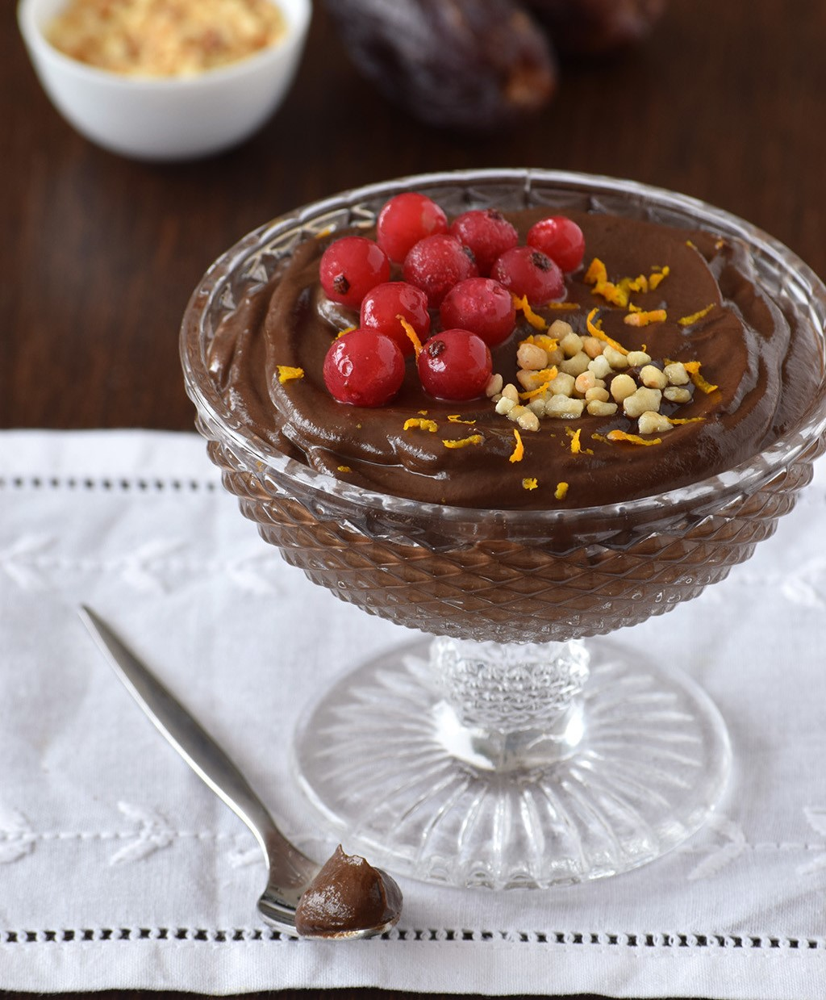

Camila Gracés Nutricionista
Crema de chocolate y palta
Ingredientes
- 1 palta madura
- 6 dátiles deshuesados
- 2 cdas de cacao en polvo sin azúcar
- 4 cuadraditos de chocolate al 85%
- Opcional: leche o bebida vegetal
Preparación
- Comienza remojando los dátiles en agua caliente
- Corta la palta y colócala en un mixer
- Derrite los cuadraditos de chocolate en intervalos cortos de tiempo en el microondas o al baño maría
- Mixea el cacao, chocolate derretido y los dátiles remojados
- Añade leche o bebida vegetal al gusto para ajustar la textura (opcional)
- Sirve en dos vasitos y decora con cacao puro y fruta fresca
